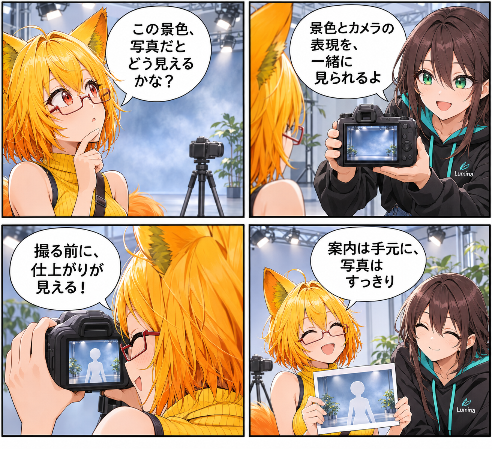

2026.11.16 / Development Log / Feature Spotlight
閑話休題：フレームの中に、仕上がりを先に見る
新規実装の報告ではなく、VRASに既にある物理カメラのプレビューで、撮影前に景色とカメラの表現を見通す考え方を紹介します。
今回は feature-spotlight（機能紹介） です。集計期間は2026-11-15 03:00:00 JSTから2026-11-16 02:59:59 JSTまで、対象はViewerの
main です。集計終了時点のHEADは c33733a41be121b814a1732df8c9eae089ace2ea、期間内コミットは0件でした。Assets/Scenes/MainScene.unity の未コミット差分は、期間内に実装された事実を確定できないため実績には含めていません。
まず、カメラの枠をのぞく
スタジオには空や光、霧など、場面全体をつくる環境側の要素があります。そこへカメラ側の表現を重ねると、同じ場所でも写真の受け取り方は少し変わります。物理カメラのプレビューは、撮る前にその枠の中を確かめるための入口です。
景色とカメラの表現を、一緒に見る
VRASでは、環境側の効果とアクティブなCapture Cameraに属する効果を分けて扱います。物理カメラのプレビューと最終Captureでは、どちらも環境とカメラの効果をあわせて確認できるので、撮影後に初めて印象の違いに気づくことを減らせます。
画面の補助表示は写真に残さない
撮影画像へライト操作ガイドなどのViewer補助表示を混入させないことも、撮影経路の約束です。構図を整えるための案内は操作中に役立ち、残したい一枚には入れない――その役割を分けています。
今回の紹介範囲
これは現行実装の紹介です。当日に新しく実装・検証完了したことを示すものではありません。
4コマの話
ろひはスタジオで、同じ背景を見ながら「撮る一枚の見え方」を確かめます。ルミナは物理カメラの枠へ目を向け、景色とカメラの表現を重ねて見られることを伝えます。ろひは枠の内側で仕上がりを見通し、最後は補助表示のない写真を思い浮かべます。
まとめ
物理カメラのプレビューと最終Captureでは、環境側とカメラ側の効果をあわせて扱います。撮影前にフレームの中を確かめ、操作用の補助表示を写真へ残さず、意図した一枚を整えるための既存機能です。